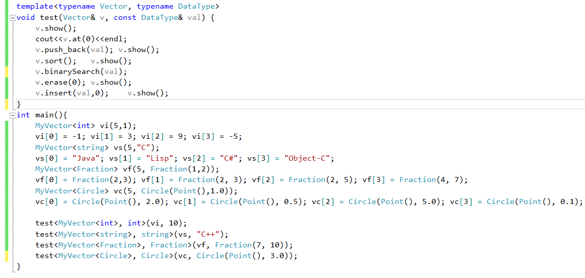

1. 利用静态数组（长度1000）设计一个MyVector类模板，可参考 http://www.cplusplus.com/reference/vector/vector/ 要求实现以下功能
1） 构造函数，默认构造函数，带两个参数的构造函数和拷贝构造函数;
2） operator =();
3） size(), resize(),empty();
4） operator[](), at(), front(), back();
5） push_back(),pop_back(),insert(),erase(),clear();
6） sort(); 从小到大进行排序
功能测试：分别用string，int，double，实验十第2题目，实验十二第3题，测试代码如下
